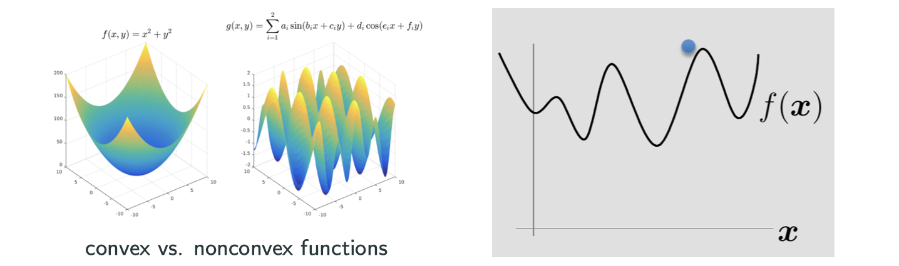
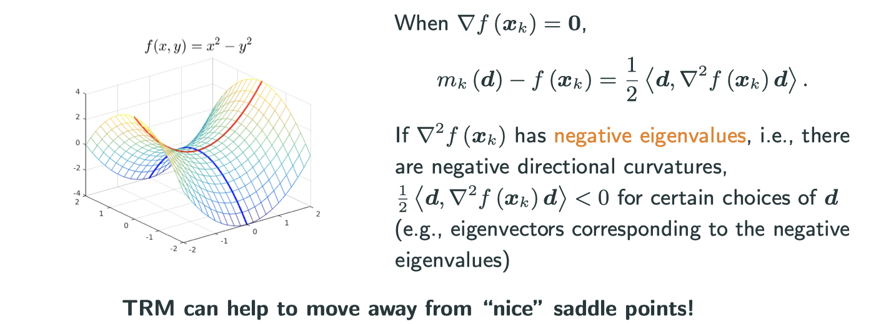

Numerical Optimization: Iterative Methods
Acknowledgement: This course (CSCI 8980) is being offered by Prof. Ju Sun at the University of Minnesota in Fall 2020. Pictures of slides are from the course.
Many deep learning techniques are about solving optimization problems.
Find global minimum
- Grid search: incurs
cost
- Smarter search (using properties):
- 1st-order necessary condition: Assume
is 1st-order differentiable at
. If
with
: 1st-order stationary point (1OSP)
- 2nd-order necessary condition: Assume
is 2-order differentiable at
and
: 2st-order stationary point (2OSP)
- 1st-order necessary condition: Assume
How to find 1OSP and 2OSP?
- Analytic method: find 1OSP’s using gradient first, then study them using Hessian, but this is only for simple functions. e.g.:
- Iterative methods: find 1OSP’s/2OSP’s by making consecutive small movements
Making consecutive small movements to reach the minimum is as the image above,but there are two questions:
- What direction to move?
- How far to move?
Based on these two questions, there are two possibilities:
- Line-search methods: direction first, size second
- Trust-region mothods: size first, direction second
Classic line-search methods
Four questions:
- How to choose direction
?
- How to choose step size
?
- Where to initialize?
- When to stop?
How to choose a search direction?
We want to decrease the function value toward global minimum. The intuitive way is to find a direction to decrease most rapidly, which is the gradient.
for any fixed , using 1st order Taylor expansion
If we set , then we get gradient/steepest descent:
For gradient descent, the convergence or the speed of movement depends on the shape of contour plot. That’s also what people call the conditioning (condition number) problem.
Curvature is related to Hessian, which is the direction that the gradient changes the fast. In graph, curvature is greater if the 3D graph is more squeezed in that area. Image putting a ball on a valley, the direction that it intends to fall toward has the largest curvature.
In short, find a direction to descrease most rapidly is shortsighted, because it finds a direction which is best locally but not neccesarily globally. Therefore, to find a direction based on both gradient and Hessian is a better solution.
minimizing the right side
If we set , then we get the Newton’s method:
where can set to be 1.
From the image below, I hope you can be convinced that this is faster than gradient descient.
Why called Newton’s method
Recall Newton’s method for root-finding in calculus:
Newton’s method for solving nonlinear system :
Newton’s method for solving :
Even though it seems like Newton’s method is faster just looking at the image above, but it costs per step while gradient costs
per step. That’s why plain Newton never used for large-scale problem.
There are also other problems with Newton’s method. For example, in
may be non-invertible
- the minimum value is
. If
is not positive definite, the “minimum” may turn out to be “maximum” or somthing else.
Find step size
- Naive choice: sufficiently small constant
for all
- Robust and practical choice: back-tracking line search.
Intuition for back-tracking line search:
- By taylor’s theorem
When is sufficiently small,
dictates the value descrese. But we also want
to be as large as possible to make rapid progess
- Idea: find a large possible
to make sure
(key condition) for a chosen parameter
, and no less
- Details: start from
. if the key condition not satisfied,
for a chosen parameter
A widely implemented strategy in numerical optimization packages:
Where to initialzie/start?

- Convex: most iterative methods converge to the global min no matter the initialization
- Nonconvex: initialization matters a lot. Common heuristics: random initialization, multiple independent runs
- Nonconvex: clever initialization is possible with certain assumptions on the data: https://sunju.org/research/nonconvex/
When to stop?
Fix some positive tolerance values . Possibilities:
m i.e., check 1st order cond
and
, i.e., check 2nd order cond
Advanced line-search methods
Momentum method
Why momentum?
- Gradient Descent is cheap (
per step) but overall convergence sentitive to conditioning.
- Newton’s convergence is not sensitive to conditioning but expensive (
per step)
In physics, a heavy object has a large innertia/momentum – resistance to change of velocity
This image illustrates the next step will be determined by the summing of gradient and velocity.
Quasi-Newton methods
Quasi-: seemingly; apparently but not really
Newton’s method: cost storage and
computation per step
Idea: approximate or
to allow efficient storage and computation – Quasi-Newton Methods
Choose to approxiamte
so that
- avoid calculation of second derivative
- simplify matrix inversion, i.e., computing the search direction
credit: UCLA ECE236C
- Different variants differ on how to compute
- Normally
or its factorized version stored to simplify calculation of
BFGS method
Without being specified, when people say Quasi-Newton method, they usually refer to BFGS method, which is Broyden-Fletcher-Goldfarb-Shanno method.
credit: UCLA ECE236C
Cost of update: instead of
in Newton’s method
Cost of Storage:
- secant condition:
(think of 1st Taylor expansuion to
)
- Curvature condition:
to ensure that
if
and
are close in an appropriate sense
This can be further improved by L-BFGS method, which reduce the cost of storage and update to , which is linear in dimension
Block coordinate descent
If we have a function with many blocks of variables, then each time we only find the minimum of each block of variables.
Consider a function with
- Also called alternating direction/minimization methods
- When
, called coordinate descent
- may work with constrained problems and non-differentiable problems (e.g.,
s.t.
orthogonal, Lasso:
)
- maybe faster than gradient descent or Newton
- maybe simple and cheap
Conjugate gradient methods
Solve linear equation
If we apply coordinate descent:
The two graphs is the case of when , that’s why in graph of the left-hand side it only takes two steps to find the minimum. We can generalize it to n-dimensional space, then it will need n steps to solve the problem.
Conjugate can be understood as orthogonal here, as you can see in the graph above, each step it’s going to a orthogonal direction of last direction.
Trust-region methods
Size first, direction second
Recall Taylor expansion
To measure approximation quality:
Why turst-region method (TRM)?
Why we want to consider this method which is quite different with other methods in style?
Recall Taylor expansion
- Take
- Gradient descent: stop at
Why newton’s method is a not a good idea on siatuation that gradient is zero?
may be just stop at
or be ill-defined.
